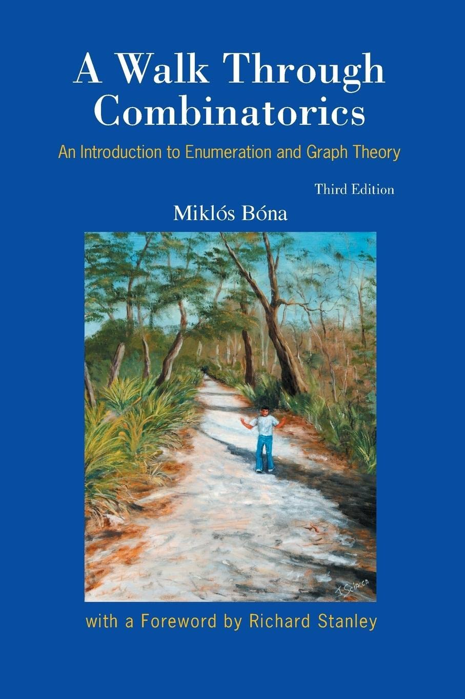

A Holiday Dive into Combinatorics
With a bit of free time on my hands during the holiday break, I decided to embark on a mathematical adventure into the foundations of combinatorial algorithms. And what better companion for this journey than the classic text, A Walk Through Combinatorics and Graph Theory by Miklós Bóna?
I’ve made my way through the first few chapters, and in this post, I’ll share my take on them—presented with a twist. While the book itself is excellent, it can sometimes lean toward the formal side, making the underlying intuition a bit elusive. Nevertheless, its clear structure and step-by-step introduction of concepts make it a fantastic resource for beginners.
So, if you’re ready to explore the world of combinatorics from a fresh perspective, join me on this walk! I hope you enjoy the journey as much as I did. 😊
How Many Ways Can Mathematicians Line Up for Coffee?
Let us commence our mathematical adventure with a deceptively simple question: Given \(n\) individuals, in how many distinct ways can we arrange them in a single line? Imagine, if you will, a group of eager volunteers—perhaps mathematicians at a conference—awaiting their turn to stand in line for coffee.
For the coveted first spot in the line, we have \(n\) enthusiastic candidates. Once that position is filled, only \(n-1\) hopefuls remain for the second spot, as one lucky individual is already sipping their metaphorical coffee at the front. This process continues, with each subsequent spot having one fewer option, until the final position, which is reserved for the last remaining person (who, let’s be honest, probably didn’t want to stand in line anyway).
Multiplying these choices together, we obtain the grand total of possible arrangements:
\[ n \times (n-1) \times (n-2) \times \cdots \times 2 \times 1 \]
This mathematical mouthful is succinctly denoted as \(n!\) (read as “n factorial”). In other words, \(n!\) is the number of ways to organize \(n\) unique individuals into a line—no coffee required, but a dash of combinatorial curiosity is highly recommended!
By convention, we define \(0! = 1\). At first glance, this might seem as peculiar as decaf coffee at a mathematicians’ conference, but let’s explore why this makes perfect sense.
Imagine we have two coffee machines. In front of the first machine, there are \(n\) mathematicians eagerly awaiting their caffeine fix, while \(m\) mathematicians queue up at the second machine. The question arises: in how many ways can we form two separate lines, one for each machine? The answer is straightforward—there are \(n!\) possible arrangements for the first line and \(m!\) for the second, so the total number of ways to organize both lines is:
\[ n! \times m! \]
Now, let’s introduce a plot twist. Suppose all \(m\) mathematicians at the second coffee machine suddenly decide to abandon their quest for coffee and leave the line. The second line is now empty, but our original question remains: in how many ways can we form two lines? For the first machine, we still have \(n!\) possible arrangements. For the second, with zero mathematicians, how many ways can we arrange an empty line? By our earlier formula, the answer must be:
\[ n! \times 0! \]
But logically, there is exactly one way to arrange nothing at all—by doing nothing! Thus, for our formula to remain consistent, we must have \(0! = 1\). It’s a mathematical nod to the power of nothingness: even an empty line counts as one arrangement!
From Lineups to Teams: Counting Unique Combinations
Now, let’s up the ante: suppose we wish to divide our \(n\) mathematicians into \(t\) disjoint teams. The first team will have \(a_1\) members, the second team \(a_2\) members, and so on, until the \(t\)-th team, which has \(a_t\) members. Since no mathematician is allowed to clone themselves (yet), each person can only be in one team, so we must have:
\[ a_1 + a_2 + \cdots + a_t = n \]
A natural question arises: in how many ways can we organize our \(n\) mathematicians into these \(t\) teams?
One intuitive approach is to line up all the mathematicians in some order and then assign the first \(a_1\) people to the first team, the next \(a_2\) to the second team, and so on. Since there are \(n!\) ways to arrange \(n\) people in a line, it might be tempting to declare that there are \(n!\) ways to form the teams.
However, there’s a subtle catch: within each team, the order of the members doesn’t matter. The team consisting of Alice, Bob, and Eve is indistinguishable from the team of Bob, Eve, and Alice—unless, of course, you’re keeping score of who gets their coffee first.
This means that our \(n!\) possible lineups will generate many duplicate team configurations. Why? Because within each team, the order of the members doesn’t matter. For example, if the first team has \(a_1\) members, any of the \(a_1!\) ways to arrange those people among themselves will result in the exact same team. The same logic applies to the second team: there are \(a_2!\) ways to rearrange its members without changing the team itself. This continues for each team, all the way up to the \(t\)-th team, which can be internally rearranged in \(a_t!\) ways.
To find the total number of duplicate arrangements, we multiply these possibilities together:
\[ a_1! \times a_2! \times \cdots \times a_t! \]
This product represents all the ways we can shuffle the members within each team, across all teams, without actually creating a new team configuration. So, to count only the truly distinct ways to form the teams, we divide the total number of lineups, \(n!\), by this product:
\[ \frac{n!}{a_1! \times a_2! \times \cdots \times a_t!} \]
In other words, we’re correcting for all the “internal shuffling” that doesn’t change the teams themselves.
Choosing Subsets: When Order Doesn’t Matter
Now, let’s zoom in on a particularly famous case of our team-forming formula: the binomial coefficient. Some of you may already feel a sense of déjà vu!
Suppose we set the number of teams to \(t = 2\), and let the first team have \(k\) members (that is, \(a_1 = k\)). By necessity, the second team will have \(n - k\) members, since \(a_2 = n - k\). Plugging these values into our earlier formula, we get:
\[ \frac{n!}{k! (n-k)!} \]
This expression is known as the binomial coefficient, and is commonly denoted as \(\binom{n}{k}\). It represents the number of ways to choose a subset of \(k\) individuals from a set of \(n\)—or, in less formal terms, the number of ways to assemble a team of \(k\) mathematicians from a larger group of \(n\).
But why do we call this a “set”? Because, in a set, the order of the elements doesn’t matter—just as in our team-forming scenario above. Whether Alice, Bob, and Eve are chosen in that order or in any other, it’s the same team. So, \(\binom{n}{k}\) counts the number of unordered groups of \(k\) people you can select from \(n\) candidates—a mathematical staple as classic as coffee at a conference!
The Binomial Theorem, Vowels, and the Magic of Counting Twice
Now, for my favorite part of this post: story proofs! Throughout our mathematical education—whether in high school, undergrad, or even grad school—we’re often presented with proofs that are formal, symbol-heavy, and, let’s be honest, sometimes a bit intimidating. But here’s the secret: you don’t always need a blizzard of symbols to make a proof rigorous. Sometimes, a good story is all you need.
This idea is beautifully championed by Prof. Joe Blitzstein in his legendary Stat 110 course at Harvard. Instead of drowning in algebraic notation, let’s prove a classic result with a story. Consider the famous Binomial Theorem:
\[ (x + y)^n = \sum_{k=0}^n \binom{n}{k} x^k y^{n-k} \]
Don’t ask me for a “standard” proof—I’m not sure I know one! But I can offer a proof that’s intuitive, makes perfect sense, and is as solid as any formal argument.
The Story:
Suppose you have a vocabulary of size \(v\). How many \(n\)-letter words can you form using this vocabulary? For each letter in the word, you have \(v\) choices, so the total number of possible words is simply \(v^n\).
Now, let’s count the same thing in a more nuanced way. Suppose your vocabulary consists of \(x\) vowels and \(y\) consonants, so \(x + y = v\). Let’s ask: how many \(n\)-letter words have exactly \(k\) vowels, and those vowels are placed at specific positions \(i_1, i_2, \ldots, i_k\)?
For each of these \(k\) positions, you have \(x\) choices (any vowel), so there are \(x^k\) ways to assign vowels to those spots. For the remaining \(n-k\) positions, each can be filled with any of the \(y\) consonants, giving \(y^{n-k}\) possibilities. So, for a fixed set of \(k\) positions for the vowels, there are \(x^k y^{n-k}\) possible words.
But how many ways can we choose which \(k\) positions will be occupied by vowels? That’s exactly \(\binom{n}{k}\), the number of ways to choose \(k\) positions out of \(n\).
Therefore, the total number of \(n\)-letter words with exactly \(k\) vowels (regardless of where they appear) is:
\[ \binom{n}{k} x^k y^{n-k} \]
To find the total number of \(n\)-letter words (with any number of vowels from \(0\) to \(n\)), we sum over all possible values of \(k\):
\[ \sum_{k=0}^n \binom{n}{k} x^k y^{n-k} \]
But we already know, from our earlier calculation, that the total number of \(n\)-letter words is \(v^n\), where \(v = x + y\). So, by counting the same thing in two different ways, we arrive at:
\[ (x + y)^n = \sum_{k=0}^n \binom{n}{k} x^k y^{n-k} \]
And there you have it—a proof that’s as satisfying as finding the last piece of a mathematical puzzle, all thanks to a story about vowels, consonants, and the magic of counting!
Counting is Just the Beginning
This post covered the first part of the book, focusing on the art and science of counting. But don’t put away your mathematical curiosity just yet—there’s much more to explore! Stay tuned for the next chapters 😊